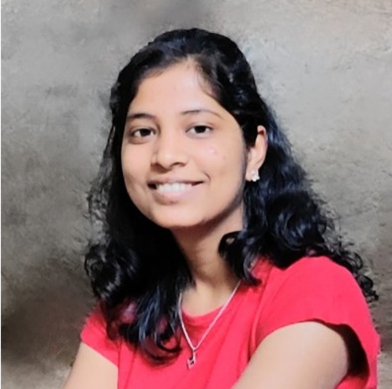

Primary Schooling
Vidya Mandir Prashala, Miraj
I completed my primary education in Sangali with good record
10th board Percentage : 97%
Pursuing B.Tech computer Science degree from
Vellore Institute of Technology
Looking for a challenging role in a reputable organization to utilize my technical, database, and management skills for the growth of the organization as well as to enhance my knowledge about new and emerging trends in the IT sector.Seeking an entry-level position to begin my career in a high-level professional environment and to expand my learnings, knowledge, and skills.
Vidya Mandir Prashala, Miraj
I completed my primary education in Sangali with good record
10th board Percentage : 97%
ACS College, Miraj
I completed my secondary education in Sangali with good record
12th board Percentage : 90%
Vellore Institute of Technology
I am pursuing B.Tech Computer Science Degree from VIT.Currently in the 2nd Year
CGPA : 8.46
In the internship I completed a task of integrating payment gateway into the website
Task Website link : https://gayatri2002.github.io/Spark-internship-task/
In this chapter I am in the technical and design domain.I learnt a lot of thing
from this chapter
In this chapter I am in the technical, design and management domain.
Being the part of this club teached me many things, got experience of management